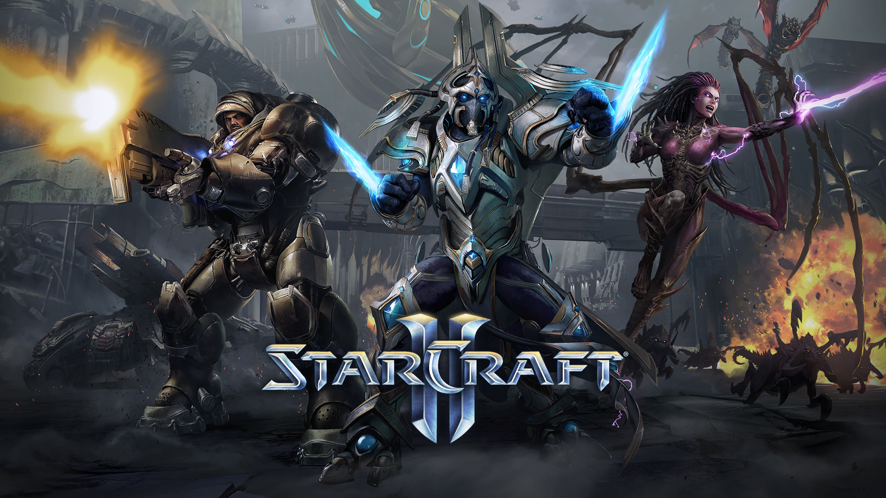
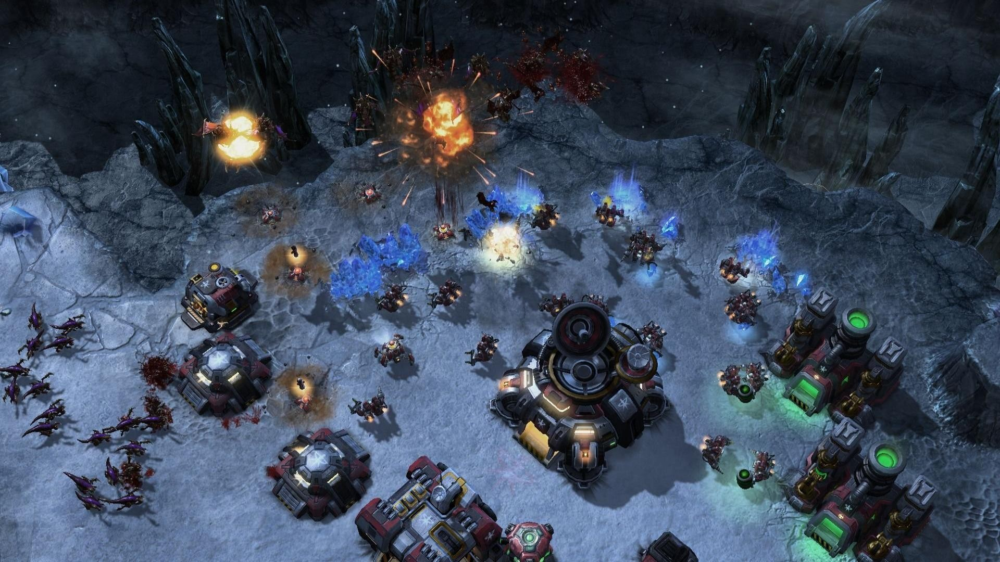
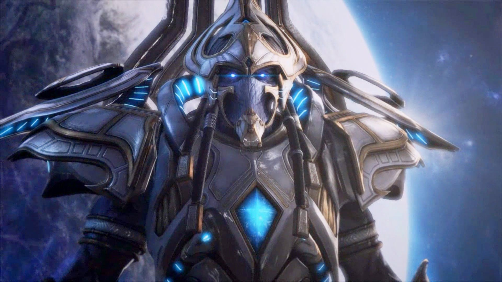
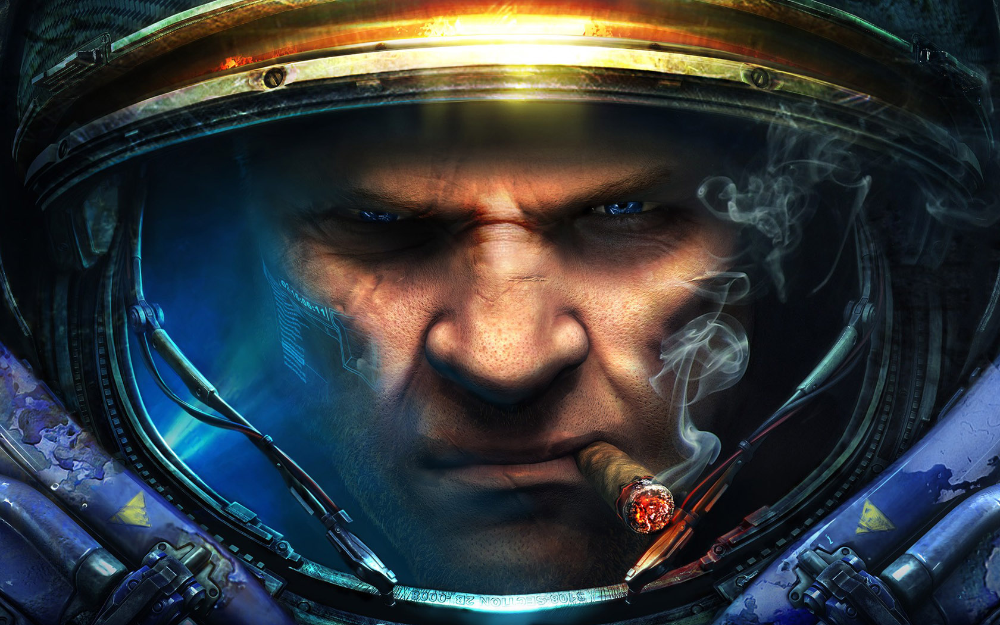
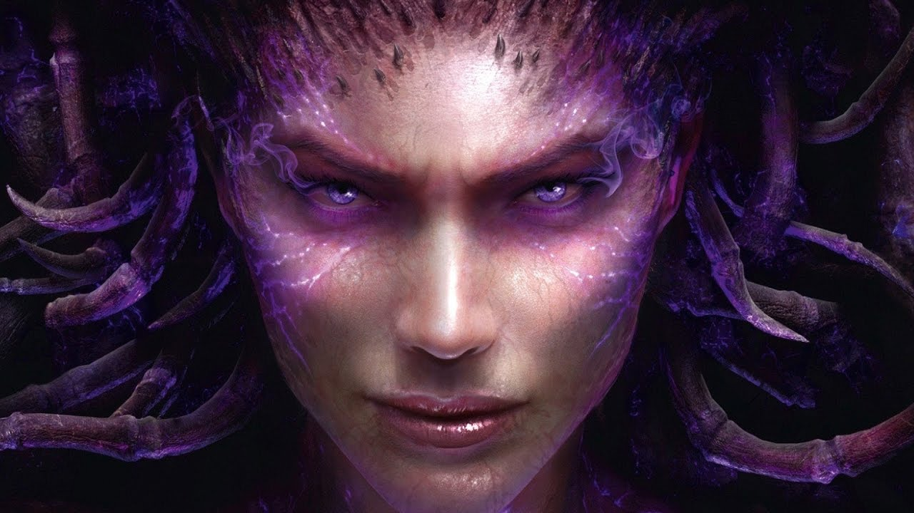
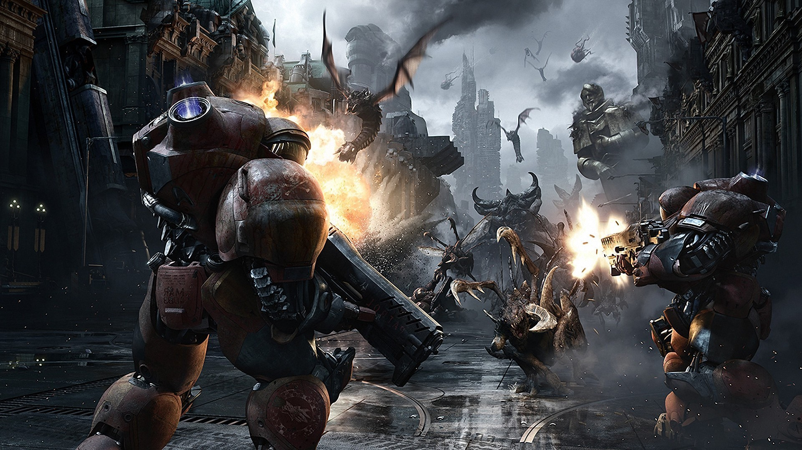

Starcraft 2
StarCraft II: Legacy of the Void is a standalone expansion pack to the military science fiction real-time strategy game StarCraft II: Wings of Liberty, and the third and final part of the StarCraft II trilogy developed by Blizzard Entertainment. The game was released on November 10, 2015.
The expansion includes additional units and multiplayer changes from StarCraft II: Heart of the Swarm, as well as a continuing campaign focusing on the Protoss race. The campaign, which focuses on Artanis as its protagonist, is a sequel to Wings of Liberty and Heart of the Swarm, and concludes the StarCraft II trilogy. Blizzard launched its invite-only beta testing of the game on March 31, 2015. The testing closed on November 2, 2015, a week before the November 10 release date.
The pre-order of the game was announced and made available for purchase on Battle.net and major game retailers on July 15, 2015. Pre-ordering the game granted immediate access to the multiplayer beta and a set of three prologue missions titled Whispers of Oblivion, which were subsequently made available to all players following the Heart of the Swarm 3.0 update on October 6, 2015.
The expansion includes additional units and multiplayer changes from StarCraft II: Heart of the Swarm, as well as a continuing campaign focusing on the Protoss race. The campaign, which focuses on Artanis as its protagonist, is a sequel to Wings of Liberty and Heart of the Swarm, and concludes the StarCraft II trilogy. Blizzard launched its invite-only beta testing of the game on March 31, 2015. The testing closed on November 2, 2015, a week before the November 10 release date.
The pre-order of the game was announced and made available for purchase on Battle.net and major game retailers on July 15, 2015. Pre-ordering the game granted immediate access to the multiplayer beta and a set of three prologue missions titled Whispers of Oblivion, which were subsequently made available to all players following the Heart of the Swarm 3.0 update on October 6, 2015.

Gameplay
The single-player campaign features an even number of missions similar to Wings of Liberty and Heart of the Swarm and centers around the Protoss character Artanis, hierarch of the Khalai Protoss and the Nerazim (Dark Templar). Legacy of the Void's campaign focuses on the Protoss and concludes the events of the Starcraft II trilogy.
Like the two preceding games, the briefing room allows interactive exploration but this time on board a Protoss Arkship known as the Spear of Adun. Missions are accessed through a Protoss version of Hyperion's "Star Map" known as the Celestial Array. Artanis' goal is to unify the Protoss and stand against Amon, a fallen Xel'Naga who wishes to reshape the universe in his image. Other characters, including Jim Raynor and Sarah Kerrigan, play smaller parts in the story as well. Game writer Chris Metzen has likened the story to that of the film 300, with a small force engaging a much more powerful one in a desperate last stand.
Like the two preceding games, the briefing room allows interactive exploration but this time on board a Protoss Arkship known as the Spear of Adun. Missions are accessed through a Protoss version of Hyperion's "Star Map" known as the Celestial Array. Artanis' goal is to unify the Protoss and stand against Amon, a fallen Xel'Naga who wishes to reshape the universe in his image. Other characters, including Jim Raynor and Sarah Kerrigan, play smaller parts in the story as well. Game writer Chris Metzen has likened the story to that of the film 300, with a small force engaging a much more powerful one in a desperate last stand.

Protoss
The Protoss receive a change to the Photon Overcharge ability; it can now be cast on Pylons but not Nexuses. Also, the Chrono Boost ability can no longer be cast on multiple structures, but instead focuses on a single structure infinitely, though it is limited to one per Nexus. The Oracle from Heart of the Swarm now has its Revelation and Envision abilities combined into one. It can now also cast a Stasis Ward, an invisible mine-like structure that, when detonated, traps units in a small radius in stasis, much like the Stasis Field ability from the Arbiter of StarCraft: Brood War. The Warp Prism, the trademark Protoss air transport, now has the ability to pick up units at a longer, safer range, but still must get on point to unload any cargo or deploy its psionic field utilized to warp-in Protoss units.
The Carrier now has the ability to launch interceptors at a longer range and safer distance. The Immortal loses its trademark Hardened Shields from HotS and WoL, and instead receives the new "Barrier" ability, which mitigates damage temporarily. As for new units, the Protoss receive the Adept, a Gateway/Warp Gate unit which excels against light-class units like the Terran Marine or Zerg Hydralisk and can use "Psionic Transfer", creating a psionic copy of the unit to which the Adept teleports after a few seconds, favoring hit-and-run tactics. Another new unit is the Disruptor, built from the Robotics Facility and requiring the Robotics Bay. It attacks by discharging a ball of energy which can be player-controlled and directed at the opponent, dealing massive damage. The Disruptor is reminiscent of the Protoss Reaver from Brood War in that precise micromanagement is required to deliver greater damage.
The Carrier now has the ability to launch interceptors at a longer range and safer distance. The Immortal loses its trademark Hardened Shields from HotS and WoL, and instead receives the new "Barrier" ability, which mitigates damage temporarily. As for new units, the Protoss receive the Adept, a Gateway/Warp Gate unit which excels against light-class units like the Terran Marine or Zerg Hydralisk and can use "Psionic Transfer", creating a psionic copy of the unit to which the Adept teleports after a few seconds, favoring hit-and-run tactics. Another new unit is the Disruptor, built from the Robotics Facility and requiring the Robotics Bay. It attacks by discharging a ball of energy which can be player-controlled and directed at the opponent, dealing massive damage. The Disruptor is reminiscent of the Protoss Reaver from Brood War in that precise micromanagement is required to deliver greater damage.

Terran
The Terrans remain virtually unaltered of their macro-mechanics inherited from Wings of Liberty, meaning they can still deploy MULEs and Extra Supplies. The Banshee receives a speed upgrade which can be researched at a Tech Lab. The Battlecruiser can now warp instantly to any location, regardless of visibility. The Reaper from Heart of the Swarm gains a grenade-like ability that deals minimal damage, but knocks back and temporarily stuns enemy units. The Widow Mine remains unaltered, except it now has a targeting beam when it fires, which gives further warning to opponents. For new units, the Terrans receive the Cyclone, a Factory-built unit that can lock on and move while firing at air targets only (it can automatically auto-attack ground units), similar to the Protoss Phoenix. Another new Terran unit is the Liberator, which can engage aircraft with its normal area-of-effect attack, but can also transform to deploy a powerful cannon to attack ground targets.

Zerg
The Terrans remain virtually unaltered of their macro-mechanics inherited from Wings of Liberty, meaning they can still deploy MULEs and Extra Supplies. The Banshee receives a speed upgrade which can be researched at a Tech Lab. The Battlecruiser can now warp instantly to any location, regardless of visibility. The Reaper from Heart of the Swarm gains a grenade-like ability that deals minimal damage, but knocks back and temporarily stuns enemy units. The Widow Mine remains unaltered, except it now has a targeting beam when it fires, which gives further warning to opponents. For new units, the Terrans receive the Cyclone, a Factory-built unit that can lock on and move while firing at air targets only (it can automatically auto-attack ground units), similar to the Protoss Phoenix. Another new Terran unit is the Liberator, which can engage aircraft with its normal area-of-effect attack, but can also transform to deploy a powerful cannon to attack ground targets.

Development
The development of StarCraft II was announced on May 19, 2007 at the Blizzard Worldwide Invitational in Seoul, South Korea. At the June 2008 Blizzard Worldwide Invitational, Blizzard Executive Vice President Rob Pardo said that StarCraft II was to be released as a trilogy of games, starting with Wings of Liberty, focused on the Terrans, followed by Heart of the Swarm, revolving around the Zerg, and finally Legacy of the Void, devoted to the Protoss. Blizzard's storyboard team was already working on Heart of the Swarm in early 2010 while Wings of Liberty's game play was refined.
As of 2008, little to no development was going into Legacy of the Void. Work had started on Legacy of the Void story, scripts and missions by March 2013, as Heart of the Swarm neared release. Dustin Browder, the game director of StarCraft II, stated that "we will certainly do our best to reduce the time between expansions", while noting that "efficient and quick game development is not something we have traditionally been great at." As of February 2013, James Waugh is serving as lead writer on Legacy of the Void.
By August 2013, the story for Legacy of the Void was written, much of the cinematics were completed, and voice actors were in the studio recording dialogue for the game. Dustin Browder announced in November 2013 he was satisfied with the game's story, but felt the missions and campaign mechanics needed more work, to make them "feel" like Protoss missions.
As of 2008, little to no development was going into Legacy of the Void. Work had started on Legacy of the Void story, scripts and missions by March 2013, as Heart of the Swarm neared release. Dustin Browder, the game director of StarCraft II, stated that "we will certainly do our best to reduce the time between expansions", while noting that "efficient and quick game development is not something we have traditionally been great at." As of February 2013, James Waugh is serving as lead writer on Legacy of the Void.
By August 2013, the story for Legacy of the Void was written, much of the cinematics were completed, and voice actors were in the studio recording dialogue for the game. Dustin Browder announced in November 2013 he was satisfied with the game's story, but felt the missions and campaign mechanics needed more work, to make them "feel" like Protoss missions.
StarCraft II: Heart of the Swarm
StarCraft II: Legacy of the Void